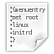

Skripte
Dieser Artikel wurde für die folgenden Ubuntu-Versionen getestet:
Ubuntu 16.04 Xenial Xerus
Ubuntu 14.04 Trusty Tahr
Zum Verständnis dieses Artikels sind folgende Seiten hilfreich:
Terminal - Ein Terminal öffnen
CD-Images - Den Inhalt eines CD-Images (ISO) lesen
Editor - einen Editor öffnen
Rechte/Dateimanager Rechte von Dateien anpassen
Achtung!
Der Grub 2 Bootloader in der Version 2.0 (stable) ist weiter in der Entwicklung. Hinweise auf tatsächliche Gegebenheiten können daher noch fehlen bzw. nach einem Update nicht mehr zutreffen. Wesentliche Abweichungen sind gekennzeichnet und wenn erforderlich, auch beschrieben.
GRUB 2 ermöglicht es, mit einfachen Mitteln das GRUB 2 Bootmenü an seine Bedürfnisse und Wünsche anzupassen. Dazu kann man eigene Skripte erstellen, deren Syntax sich an der Standard-Shell Shell ausrichtet und im Verzeichnis /etc/grub.d abgelegt und dort lauffähig gemacht werden.
Erstellen eigener Menü-Einträge¶
Es sollte das Bearbeiten / Verändern der Standardskripte im Verzeichnis /etc/grub.d vermieden werden. Diese Veränderungen werden mit dem nächsten Update der Grub 2 Pakete zerstört!
Im folgenden werden die für die meisten Situationen gängigen Menü-Einträge erklärt. Dabei handelt es sich lediglich um Beispiele, die anleiten sollen, eigene Skripte richtig zu erstellen.
Hinweis:
Die Beispiele und Entwürfe müssen an das jeweilige System angepasst werden - insbesondere die Datenträger- und Partitions-Bezeichnungen sowie andere Parameter wie z.B. die UUID.
Anlegen eines eigenen Skriptes¶
Zunächst muss ein eigenes Skript angelegt werden. Dazu legt man mit einen Editor [3] eine Datei mit dem Namensschema "XX_Eigenes_Skript" vorzugsweise im eigenen Homeverzeichnis an. Dabei muss die Bezeichnung - wie unter Konfiguation von GRUB 2 dargestellt - den eigenen Bedürfnissen entsprechend angepasst werden.
Hinweis:
Eine Variable im eigenen Skript kann auf zwei Arten interpretiert werden:
Übernahme eines Werte aus der Datei /etc/default/grub in die /boot/grub/grub.cfg, dann wird der z.B.: mit ${GRUB_CMDLINE_LINUX_DEFAULT} vorgegebene Inhalt (z.B.: quiet splash) direkt übernommen
Soll dagegen die Übernahme eines Werte erst beim Booten erfolgen, dann wird das mit einem vorangestelltem Rückstrich ( \ ), wie z.B.: bei \${root} in ein eigenes Skript eingetragen.
Nachdem das Skript inhaltlich den eigenen Vorstellungen entspricht, muss man diese Datei vor dem Kopieren mit den erforderlichen Rechten [4] versehen und die Ausführbarkeit einstellen.
Jetzt kann man diese Datei im Terminal [1] mit:
sudo cp -f <meine Datei> /etc/grub.d/
kopieren und sich im Terminal [1] mit:
sudo grub-mkconfig
das Ergebnis anzeigen lassen.
Allgemeiner Aufbau Menüeintrag¶
Das folgende Beispiel für ein Skript wurde abgeleitet aus einem Standard-Eintrag für den Recovery Modus):
Allgemeines Beispiel¶
1 2 3 4 5 6 7 8 9 10 11 12 13 14 15 16 17 | #! /bin/sh -e echo "Füge Eintrag für Lucid Lynx ein" >&2 cat << EOF menuentry "Ubuntu" --class ubuntu --class gnu-linux { recordfail savedefault insmod ext2 set root='(hd0,msdos3)' search --no-floppy --fs-uuid --set=root ae875d31-cc84-4349-95d7-01a82ad76d61 linux /vmlinuz root=UUID=ae875d31-cc84-4349-95d7-01a82ad76d61 ro ${GRUB_CMDLINE_LINUX_DEFAULT} echo Lade aktuellen Kernel von ${GRUB_DEVICE}... initrd /initrd.img echo Lade und Initiere RAM-Image von ${GRUB_DEVICE}... } EOF |
Erläuterungen¶
Es sind dabei die Festplatten- bzw. Partitions-Bezeichnung, die UUID und soweit eingesetzt, die Kernel-Bezeichnung an die jeweiligen Gegebenheiten anzupassen!
| Befehlszeilen in den Skripten | |
| Zeile | Funktion |
| Zeile 1: | Die erforderliche Shebang für jedes separate Skript im Verzeichnis /etc/grub.d/. |
| Zeile 3: | Diese Zeile ist optional. Beim Updaten der Grub-Konfiguration mit grub-mkconfig bzw. update-grub im Terminal gibt diese Zeile eine Rückmeldung - im Beispiel "Füge Eintrag für Lucid Lynx ein" - so dass man überprüfen kann, ob das Skript berücksichtigt wurde. Der Text für die Rückmeldung kann dabei innerhalb der "" beliebig festgelegt werden. |
| Zeile 5+17: | cat << EOF und das abschließende EOF stellen den Bereich dar, der später der /boot/grub/grub.cfg hinzugefügt wird. Menü-Einträge müssen also innerhalb dieses Bereichs definiert werden. |
| Zeilen 6-16: | Definieren den eigentliche Bereich für einen Menü-Eintrag. |
| Zeile 6: | Der Menü-Eintrag wird eingeleitet durch menuentry "Bezeichnung", danach später nicht mehr sichtbare interne Systemparameter wie --class ubuntu sowie mit dem Startzeichen { für die Menü-Sequenz. Die Bezeichnungen werden dabei für die automatisch generierten Einträge von den gefundenen Kernel-Bezeichnungen abgeleitet (für eigene Skripte sind diese frei wählbar) und repräsentieren dann den Eintrag im Auswahlmenü. Experten-Info:Will man die automatisch generierte Bezeichnung |
| Zeile 7: | Dieser Eintrag wird automatisch nur für Kerneleinträge im Verzeichnis /boot erstellt. Damit wird vorsorglich ein Eintrag für die Datei /boot/grub/grubenv generiert, falls es bei dem nachfolgenden Auslesen Fehler geben sollte oder das System aus der Grub2 Commandline gestartet wurde (aufgerufen mit Taste "C" bzw. "E"). |
| Zeile 8: | Hiermit wird der mittels Pfeiltaste "↓" bzw. "↑" im Grub-Menü aktuell ausgewählte Eintrag mit seiner Bezeichnung (siehe Zeile 6) in der Datei /boot/grub/grubenv abgespeichert. Hinweis:Dieser Eintrag wird bei einem |
| Zeile 9: | Gibt die Art der Formatierung des Datenträger an und veranlasst Grub2 die entsprechenden Treiber zu laden. Es muss für jeden erforderlichen Treiber eine Zeile / ein Eintrag vorgesehen werden - siehe dazu auch die Ausführungen zu den Treibern. |
| Zeile 10: | set root= gibt die Partition an, auf der die Bootdateien des im Menü-Eintrag angegebenen Systems liegen. Siehe dazu auch Festplatten- und Partitions-Bezeichnungen. |
Je nach Erstellung der Partitionstabelle sind z.B. (hd0,msdos3), (hd0,gpt3) einzusetzen. | |
| Zeile 11: | Die Option --no-floppy unterbindet die Suche nach einem Floppy-Disk-Laufwerk. Statt --no-floppy kann auch die Kurzform -n gesetzt werden. |
Der Eintrag search --fs-uuid --set=root sucht nach der angegebene UUID der Partition hinter set=root. Statt --fs-uuid kann auch die Kurzform -u gesetzt werden. | |
Ein Eintrag search --label --set=root sucht nach dem angegebenen Label der Partition hinter set=root. Statt --label kann auch die Kurzform -l gesetzt werden. | |
Wird die Suche mit den vorgegebenen Parametern fündig, so überschreibt dieser Eintrag die Vorgabe aus der Zeile 10. Wird die angegebene Vorgabe nicht gefunden - z.B. weil die Partition zwischenzeitlich formatiert wurde - dann wird das set root= aus Zeile 10 angewendet. | |
| Zeile 12: | Diese Zeile gibt die Bezeichnung für den Kernel an, der geladen werden soll und wo sich dieser befindet (siehe auch nachfolgend die diversen Varianten). Der Eintrag der Kernel-Optionen erfolgt entsprechend der obigen Vorgaben, siehe Variablen für Kernelzeilen. Hier kann entweder der relative Pfad (wie im Beispiel) als auch der absolute Pfad mit relevantem Kernel angegeben werden. |
| Zeile 13+15: | Diese Zeile wird automatisch bei Menüeinträgen für den Recovery Modus erstellt und nach der Auswahl angezeigt. Diese Anzeige kann auch für eigene Skripte angewendet werden. Der Zusatz ${GRUB_DEVICE} fügt automatisch die relevante Partition in Form von /dev/sda3 ein. |
| Zeile 14: | Diese Zeile gibt die Bezeichnung für das Boot-Image an, das geladen werden soll und wo sich dieses befindet (siehe auch nachfolgend die diversen Varianten) und den Hinweis in Zeile 12. |
| Zeile 16: | Hier befindet sich das abschließende } für den Menüeintrag. |
Ubuntu oder andere Linux-Distributionen starten¶
Kernel-Images¶
Ein Kernel-Menü-Eintrag ist der Standard-Menü-Eintrag unter GRUB 2, um ein Linux-System zu booten. Dazu wird der Pfad zum entsprechenden Kernel-Image - der das Starten des Systems einleitet - angegeben. Grundsätzlich werden Kernel-Einträge automatisch über das Skript 10_linux für die aktuelle Distribution und 30_os_prober für andere auf dem Computer installierte Linux-Distributionen gesucht und erstellt.
Sollte es notwendig sein, so kann man einen solchen Eintrag auch manuell erstellen:
Beispiel:
1 2 3 4 5 6 7 8 9 10 11 | #! /bin/sh -e echo "Adding Saucy Salamander entry" >&2 cat << EOF menuentry "Ubuntu, mit Linux 3.11.0-15-generic" { insmod ext2 set root='(hd0,msdos3)' search --no-floppy --fs-uuid --set=root d3afdd1-045a-490f-b7ba-86c0c2d8c500 linux /boot/vmlinuz-3.11.0-15-generic root=UUID=d3afdd1-045a-490f-b7ba-86c0c2d8c500 ro quiet splash initrd /boot/initrd.img-3.11.0-15-generic } EOF |
Liegt das Zielsystem auf einem externen Datenträger wie z.B. einer USB-HDD, so ist zu obigem Eintrag zusätzlich direkt unter der Zeile menuentry die Zeile 3 einzutragen:
1 2 3 4 5 | .... menuentry "Ubuntu, auf externer Festplatte" { insmod usb insmod ext2 .... |
damit die folgenden Daten richtig ausgelesen werden können. Das externe Medium muss aber grundsätzlich vom BIOS erkannt und ausgelesen werden können. Insbesondere einige USB 3.0-Ports haben damit in diesem frühen Zeitpunt noch Probleme.
Anzeige in der Menüzeile¶
Für Ubuntu wird aufgrund der System-ID als Anzeige im Grubmenü immer "Ubuntu" verwendet, auch wenn es sich z.B. um das Derivat "Lubuntu" handelt. Dieser Umstand ist für viele Benutzer unbefriedigend. Um diese Anzeige auf das wirkliche Derivat zu bringen, kann man nachfolgende Veränderungen vornehmen:
Derivate-Kennung aktivieren¶
Es ist in der /etc/default/grub folgende Änderung mit Rootrechten einzubringen:
#GRUB_DISTRIBUTOR=`lsb_release -i -s 2> /dev/null || echo Debian` GRUB_DISTRIBUTOR="Lubuntu"
Hier wurde als Ersatz für  Ubuntu beispielhaft
Ubuntu beispielhaft  Lubuntu für die Anzeige im Grubmenü eingesetzt.
Lubuntu für die Anzeige im Grubmenü eingesetzt.
Basis für Umstellung der Anzeige¶
In das Verzeichnis /etc/grub.d wird das folgende Skript ausführbar als 00_abfrage abgelegt. Damit wird sichergestellt:
das bei einem Upgrade von GRUB 2
diese Änderung wieder übernommen wird
die Bezeichnung im Skript /etc/grub.d/10_linux akzeptiert wird
1 2 3 4 5 6 7 8 | #!/bin/sh -e [ "$GRUB_DISTRIBUTOR" ] || exit; [ "$GRUB_DISTRIBUTOR" = "Ubuntu" ] && exit echo "OS-Bezeichnung = $GRUB_DISTRIBUTOR" >&2; request_file=/etc/grub.d/10_linux; if grep -r 'Ubuntu|Kubuntu' $request_file; then sed -i s/Ubuntu\|Kubuntu/$GRUB_DISTRIBUTOR/g $request_file; fi; |
Man testet dieses danach im Terminal [1] aus mit
sudo grub-mkconfig
und überprüft die dabei angezeigten Anzeigen unter dem jeweiligen menuentry, bevor man das mit
sudo update-grub
in sein System übernimmt.
LVM und RAID¶
Ein Fortschritt von GRUB 2 ist, dass die Informationen für ein Betriebssystem von einem RAID-Verbund oder LVM sowie eine Kombination aus beiden, direkt ausgelesen werden kann.
Achtung!
LVM-RAID-Skript¶
Ein Menüeintrag am Beispiel einer Kombination kann dann so aussehen:
1 2 3 4 5 6 7 8 9 10 11 12 13 14 | #! /bin/sh -e echo "Füge eigene Menü-Option Saucy Salamander ein" >&2 cat << EOF menuentry "Ubuntu, mit Linux 3.11.0-15-generic" { insmod raid insmod mdraid insmod lvm insmod ext2 set root='(vg_1-boot)' search --no-floppy --fs-uuid --set=root 11992cde-b1d9-4392-bcc4-13c2ce8702aa linux /vmlinuz-3.11.0-15-generic root=/dev/mapper/vg_1-root ro quiet splash initrd /initrd.img-3.11.0-15-generic } EOF |
Relevant sind dabei die Zeilen, die mit insmod beginnen. Hier werden die Module für das RAID raid, mdraid und für das LVM benötigte Modul lvm geladen. Des weiteren muss die Bezeichnung für das LVM-Device (hier im Beispiel vg_1-boot in Zeile 11 bzw. vg_1-root in Zeile 13) neben den anderen Daten an die eigenen Gegebenheiten angepasst werden!
In der Regel werden die erforderlichen Module durch das Skript /etc/grub.d/10_linux bei einem grub-mkconfig bzw. update-grub (siehe) automatisch ermittelt und eingesetzt.
Symlink zum Wurzelverzeichnis¶
Ein symlink-Menü-Eintrag startet wie der Kernel-Menü-Eintrag auch einen Linux Kernel. Dabei wird anstelle einer kompletten Pfad- und Kernel-Bezeichnung
1 2 | linux /boot/vmlinuz-2.6.32-25-generic root=UUID=41b9df5e-....-... initrd /boot/initrd.img-2.6.32-25-generic |
der Pfad als Symlink zum Kernel angegeben. Dieser Symlink befindet sich direkt im Wurzelverzeichnis und verweist im folgenden Beispiel auf den jeweils aktuellen Kernel im Verzeichnis /boot.
1 2 | linux /vmlinuz root=UUID=41b9df5e-...-... initrd /initrd.img |
Experten-Info:
Es ist zu beachten, dass der automatisch generierte Symlink im Wurzelverzeichnis bei einem Betriebssystem mit einem EFI Bootmanagement den Einsprung für das secure-boot auf das Image vmlinuz-xxx-generic.efi.signed nicht berücksichtigt!
Es muss immer geprüft werden, ob dieser Symlink sowohl nach einem Kernelupdate als auch beim Entfernen alter Kernel richtig gesetzt wurden. Es können sich dabei diese symbolischen Links so verändern, dass ein Starten des Systems verhindert wird.
Symlink zur Boot-Partition¶
Befindet sich das Verzeichnis /boot auf einer separaten Partition, so greift die Vorgehensweise unter Symlink zum Wurzelverzeichnis nicht. Dazu muss dann das folgende Skript (mit z.B. mit 09_K_aktuell bezeichnet) zwischen geschaltet werden:
1 2 3 4 5 6 7 8 9 10 11 12 13 14 15 16 17 18 19 | #!/bin/sh -e # Hiermit wird bei einem 'update-grub' der aktuelle Kernel # intern auf eine einheitliche Form innerhalb '/boot' verlinkt. SETZE_LINK () { rm -f ${SUCHE_WAS}; list=$( for i in ${SUCHE_WAS}-* ; do echo -n "$i " ; done ) [ "x$list" = "x" ] && exit linux=$( version_find_latest $list ) ln -s "$linux" ${SUCHE_WAS} > /dev/null echo "Link für $linux eingefügt" >&2; } . /usr/lib/grub/grub-mkconfig_lib cd /boot; SUCHE_WAS="vmlinuz" && SETZE_LINK; SUCHE_WAS="initrd.img" && SETZE_LINK; |
Nun wird nach jedem Kernelupdate bzw. nach der Eingabe in das Terminal von:
sudo update-grub
ausschließlich der jeweils aktuelle (höchste) Kernel als Symlink im Verzeichnis für die Images angeboten.
Experten-Info:
Dieses Skript berücksichtigt auch die Belange eines EFI Bootmanagement und setzt sofern ein secure-boot erkannt wurde, den Symlink auf das aktuelle Image vmlinuz-xxx-generic.efi.signed. Das Skript kann somit generell für eine Korrektur des automatisch gesetzten Symlink zur Boot-Partition benutzt werden.
Configfile¶
Mit einem configfile-Menü-Eintrag kann man GRUB 2 anweisen, die Menü-Konfiguration zur Laufzeit aus einer anderen Datei als der standardmäßigen /boot/grub/grub.cfg zu entnehmen. Das ist z.B. dann sinnvoll, wenn man eine weitere Distribution auf dem Computer installiert hat, die auch GRUB 2 als Bootloader einsetzt oder aber auch einfach nur für Experimente.
Beispiel:
1 2 3 4 5 6 7 8 9 10 | #! /bin/sh -e echo "Adding Precise Testing menuentry" >&2 cat << EOF menuentry "Nachladen Precise grub.cfg von /dev/sdb1" { insmod ext2 set root='(hd1,1)' search --no-floppy --fs-uuid --set=root 11992cde-b1d9-4392-bcc4-13c2ce8702aa configfile /boot/grub/grub.cfg } EOF |
Hier wird die /boot/grub/grub.cfg einer Installation eingelesen, die sich auf der ersten Partition der zweiten Festplatte im Computer befindet. Mit der Esc -Taste kann man wieder in das Menü zurück wechseln, von dem aus aufgerufen wurde.
Submenü einrichten¶
Man kann die Funktion Submenü auch für seine eigenen Zwecke benutzen.
Um das zu realisieren, kann man verschiedene Wege beschreiten - wichtig ist nur, dass man die relevanten Menüpunkte (Skripte) zusammenfasst und vor diesen die Sequenz
1 | submenu 'Meine Menüsammlung' { |
im ersten Skript einbringt und am Ende der Sammlung noch eine geschweifte Klammer hinter dem letzten Skript zusätzlich anordnet. Oder man macht das z.B.: jeweils in einem Skript, dass dann in der Zählung entsprechend angelegt wird:
12A_submenu_start mit:
1 2 3 4 | #! /bin/bash -e cat << EOF submenu 'Meine Menüsammlung' { EOF |
13_... bis 16_... Skriptesammlung
19A_submenu_abschluss mit:
1 2 3 4 | #! /bin/bash -e cat << EOF } EOF |
Fremde Betriebssysteme (Windows) mittels chainloader laden¶
Der chainloader-Menü-Eintrag wird für Betriebssysteme genutzt deren Kernel GRUB 2 nicht direkt laden kann - in der Praxis also in aller Regel Windows. Dabei wird GRUB 2 angewiesen, das fremde System zu starten, indem es entweder den Partitions-Bootsektor der Partition des betreffenden Betriebssystems oder aber den MBR der Platte auf der das betreffende Betriebssystem installiert ist, lädt.
Dabei muss man aber unterscheiden, wie das fremde Betreibssystem installiert wurde:
im "BIOS-Modus"
im "EFI-Modus"
Experten-Info:
Eine Mischung aus beiden Modi ist nicht startfähig bzw. können sich nicht wechselseitig aufrufen.
Beispiel BIOS-Modus¶
In der Regel wird das Windows bei der Installation von Ubuntu automatisch gefunden und der Menüeintrag richtig erstellt. Mit dem folgenden Skript kann man Probleme oder Besonderheiten umgehen, um Windows zu starten.
Man muss als erstes ermitteln, auf welcher Partition der Bootmanager (die Datei bootmgr) von Windows sich befindet. Das kann je nach Art der Installation von Windows auf der separaten Partion mit der Bezeichnung
"System-reserviert"
oder auf einer normalen "NTFS"-Partition sein. Diese sei beispielhaft /dev/sda1. Mit dieser Information ermittelt man die UUID mit:
sudo grub-probe -t fs_uuid -d /dev/sda1
Diese UUID wird nun in das folgende Skript in Zeile 7 übernommen:
1 2 3 4 5 6 7 8 9 10 11 12 | #! /bin/sh -e echo "Füge einen Starteintrag für Windows ein" >&2 cat << EOF menuentry "Microsoft Windows im BIOS-Modus starten" { insmod part_msdos insmod ntfs search --no-floppy --fs-uuid --set=root eaf815c4f8159045 parttool \${root} hidden- drivemap -s (hd0) \${root} chainloader +1 } EOF |
Experten-Info:
Es ist darauf zu achten, dass in der Zeile 9 die Nummerierung von (hd0) sich auf den Datenträger bezieht, auf der sich GRUB 2 mit der ../grub.cfg befindet. Herausfinden lässt sich das, indem man im Grub-Menü mit
C die cmdline aufruft und am Prompt
grub> ls
eingibt. Aus den angezeigten Datenträgern muss man nun die richtige Zuordnung treffen (was manchmal nicht ganz einfach ist). Nachdem man mit
Esc die cmdline verlassen und mit den Pfeiltasten den Windows-Eintrag ausgewählt hat, kann man diesen mit
E zum Editieren aufrufen.
Nach der Korrektur der "drivemap"-Zeile muss man nun mit der Taste F10 den Bootvorgang starten.
Beispiel EFI-Modus¶
Hinweis:
Die folgende Beschreibung zum EFI-Modus ist erst ab Precise 12.04.2 LTS anwendbar! fast-boot sowie secure-boot dürfen im Setup nicht aktiviert sein!
In der Regel wird ein EFI-Windows bei der Installation von Ubuntu (bis Version Raring Ringtail (13.04)) nicht automatisch gefunden und der Menüeintrag fehlt deshalb im Grubmenü. Das ist kein , sondern konzeptionell so gewollt! Läßt sich das Windows aber über das EFI-Menü des Rechners starten, dann kann man das auch in das Grubmenü einbringen und von hier aus das Windows starten.
Dabei ist es wichtig, dass das Ubuntu im EFI-Modus gestartet wurde, von dem aus das Windows aufgerufen werden soll! Dazu gibt man in ein Terminal [1] ein:
sudo parted -l
und sucht in der Ausgabe unter
"Flags" nach
"EFI system partition"
(oder einem sinngemäß vergleichbaren Eintrag) und überprüft das Vorhandensein einer EFI-Partition. Diese Partition wird zur Erstellung des folgenden Skriptes als Ziel verwendet und wird z.B. als 29_windows lauffähig in das Verzeichnis /etc/grub.d abgelegt und sollte nach einen
sudo update-grub
einen Eintag im Grubmenü zum Starten des Windows bereitstellen.
1 2 3 4 5 6 7 8 9 10 11 12 13 14 15 | #!/bin/bash # EFI-Partition suchen und auswerten if [ -f /boot/efi/EFI/Microsoft/Boot/bootmgfw.efi ]; then EFI_UUID=$( grub-probe -t fs_uuid /boot/efi/EFI ) echo "Menüeintrag für Windows eingefügt" >&2 cat <<EOF menuentry "Windows 8 Pro (UEFI)" { insmod fat insmod chain search --no-floppy --fs-uuid --set=root ${EFI_UUID} chainloader /EFI/Microsoft/Boot/bootmgfw.efi } EOF fi |
Hinweis:
Ab Windows 7 werden die Linux Partitionen (im EFI-Modus) unter Windows mit einem Laufwerksbuchstaben versehen und angezeigt. Da Windows diese dennoch nicht lesen kann, bietet es bei einem Zugriff auf das Laufwerk an, dieses zu formatieren.
Möchte man verhindern, dass Windows den Partitionen einen Laufwerksbuchstaben zuweist, so kann man mit Hilfe von gparted den Partitionen z.B. die Markierung atvrecv zuweisen. Ein verstecken der Partition hilft bei Laufwerken mit GUID-Partitions-Tabelle nicht mehr.
Von ISO-Dateien mittels loopback booten¶
Der loopback-Menü-Eintrag dient dazu .iso Dateien über GRUB direkt einzubinden und als Live-System zu booten.
Achtung!
loopback hängt die gesamte Partition, auf der sich die ISO-Datei befindet, in das Live-System unter /isodevice ein. Auf den Inhalt bzw. die Daten dieser so eingebundenen Partition kann , bis auf das ISO selbst, les- und schreibbar zugegriffen werden.
Ein so gestartetes Live-System kann nicht für Installationen verwendet werden: Der Installer möchte /isodevice aushängen, was jedoch (auch per umount) nur scheitern kann und dazu führt, dass die Installation auch im letzten Schritt, des Kopierens der Daten, nicht voranschreitet und keine Dateien kopiert werden können (Lubuntu 14.04). Abhilfe kann nur geschafft werden, wenn man mit sudo umount -lfr das Aushängen des /isodevice erzwingt. Die Installation muss natürlich dennoch auf eine andere Partition erfolgen, Änderungen am Live-System sind danach auch nicht mehr möglich.
Damit das für den Live-Betrieb ohne Installation nötige Einbinden einwandfrei ausgeführt werden kann, muss das Folgende beachtet werden:
1. Die ISO-Datei darf nicht auf einem RAID-Verbund und/oder LVM basiertem System abgelegt werden. Eine Ausnahme besteht, wenn /boot außerhalb des RAID bzw. LVM angelegt wurde. Die Basis-Dateien (vmlinuz bzw. initrd) werden zwar von Grub 2 noch ausgelesen, die darin integrierten Routinen können jedoch wegen fehlender Treiber nicht korrekt arbeiten.
2. Das Skript muss in der Nummerierung später als 10 angelegt sein, ansonsten werden die Kerneleinträge nicht berücksichtigt.
3. Das Skript darf keine Partitionen enthalten, die bereits mit den /etc/grub.d/10_linux aufgerufen werden/wurden oder mit den anderen Skripten (siehe oben) aufgerufen werden.
Beispiel Ubuntu-Iso¶
1 2 3 4 5 6 7 8 9 10 11 12 13 14 15 16 | #! /bin/sh -e export GRUB_LOOPBACK_ISO_FILE="/Pfad_zum_ISO/ubuntu-12.04-desktop-i386.iso" echo "Adding Live CD entry" >&2 cat << EOF menuentry 'Precise Pangolin Live CD i386-ISO booten' { insmod part_msdos insmod ntfs insmod ext2 search -n -f --set=root ${GRUB_LOOPBACK_ISO_FILE} loopback loop ${GRUB_LOOPBACK_ISO_FILE} linux (loop)/casper/vmlinuz boot=casper iso-scan/filename=${GRUB_LOOPBACK_ISO_FILE} \ ${GRUB_CMDLINE_LINUX_DEFAULT} ${GRUB_CMDLINE_LINUX} quiet splash -- initrd (loop)/casper/initrd.lz } EOF |
Die Bezeichnung loop im obigen Beispiel als Identmerkmal ist frei wählbar, sollte aber keine Umlaute enthalten! Durch dieses Skript wird ein Menü-Eintrag generiert, der das mittels /Pfad_zum_ISO/ubuntu-xyz-i386.iso ausgewiesene ISO-Image auf den Festplatten sucht und als Live-CD bootet. Der /Pfad_zum_ISO/ darf im übrigen nicht das Laufwerk enthalten, da die Zeile
search -n -f --set=root ${GRUB_LOOPBACK_ISO_FILE} auf allen verfügbaren Laufwerken nach dem ${GRUB_LOOPBACK_ISO_FILE} sucht, und das Laufwerk, auf dem die Datei liegt, als /root setzt. Außerdem darf der Pfad auch keinen logischen Link beinhalten, weil grub diesem nicht folgen kann.
| Einstellungen in der /etc/default/grub |
| GRUB_CMDLINE_LINUX_DEFAULT="quiet splash" |
| GRUB_CMDLINE_LINUX="locale=de_DE bootkbd=de console-setup/layoutcode=de" |
Mit diesen Einstellungen werden die Desktop- und die Tastatur-Einstellungen gleich auf Deutsch gestartet. Es können auch weitere Parameter übergeben werden. Auch der Eintrag für das ISO-Image kann alternativ entsprechend eigene Variablen direkt eingebracht werden:
| Einstellungen in der /etc/default/grub |
| export GRUB_LOOPBACK_ISO_FILE="/Pfad_zum_ISO/ubuntu-12.04-desktop-i386.iso" |
Dafür kann dann die relevante Zeile 2 im obigen Skript entfallen. Wenn man das Live-System nicht nur benutzen, sondern auf der Festplatte installieren möchte, muss man vor der Installation das Image mittels
sudo umount -l -r -f /isodevice
aushängen, da sonst die Installation nicht möglich ist. Da das /isodevice ansonsten in Benutzung ist, kann es nicht automatisch von der Installtionsroutine ausgehängt werden.
Beispiel Lubuntu 14.10 64bit¶
1 2 3 4 5 6 7 8 9 10 11 12 13 14 15 16 17 18 19 | #! /bin/sh -e export ISOFILE="/Pfad_zum_ISO/lubuntu-14.10-desktop-amd64.iso" echo "Found ISOFILE image: ${ISOFILE}" >&2 cat << EOF menuentry "${ISOFILE}" { insmod loopback insmod iso9660 insmod part_msdos insmod part_gpt insmod ext2 insmod ntfs insmod btrfs search -n -f --set=root ${ISOFILE} loopback loop ${ISOFILE} linux (loop)/casper/vmlinuz.efi boot=casper iso-scan/filename=${ISOFILE} ro noprompt noeject noplymouth initrd (loop)/casper/initrd.lz } EOF |
Beispiel Parted Magic Iso¶
1 2 3 4 5 6 7 8 9 | #! /bin/sh -e echo "Adding Parted Magic ISO entry" >&2 cat << EOF menuentry "Parted Magic - ISO" { loopback loop (hd0,3)/pmagic-4.4.iso linux (loop)/pmagic/bzImage isofrom=/dev/sda3/pmagic-4.4.iso edd=off noapic load_ramdisk=1 prompt_ramdisk=0 rw vga=791 sleep=10 loglevel=0 keymap=de initrd (loop)/pmagic/initramfs } EOF |
Dieser Eintrag bootet das Parted Magic-ISO Version 4.4 von der dritten Partition der ersten Festplatte.
Kernel-Boot-Optionen für ISO ermitteln¶
Um ISO-Dateien erfolgreich booten zu können sind - wie man an den langen GRUB_CMDLINE_LINUX bzw. linux-Zeilen in den Beispielen sieht - die richtigen Kernel-Boot-Optionen von entscheidender Bedeutung. Diese sind jedoch von ISO zu ISO unterschiedlich. Die Optionen sind aber stets auf dem ISO erhalten, so dass man diese nur auslesen [2] muss, um die Optionen setzen zu können.
In aller Regel befinden sich diese Optionen in der Datei isolinux.cfg, die sich im Verzeichnis /isolinux innerhalb des ISO befindet. Dort kann man auch herauslesen, welche Dateien im ISO die zu ladende Kernel-Datei und Ramdisk enthalten.
Bei den offiziellen Ubuntu ISO-Dateien verzweigt die isolinux.cfg in weitere Dateien, so dass diese Informationen in der txt.cfg im Verzeichnis /isolinux zu finden sind.
Kaskadiertes Starten¶
Sofern man z.B. einen headless Server betreibt und diesen einschaltet, kann man ohne Monitor nicht erkennen, ob das Booten erfolgreich war oder nicht - schlimmer noch, man erkennt erst nach einem erfolglosen Verbindungsversuch z.B.: über "ssh", dass etwas nicht stimmt. Nun kann man das System erneut starten und hoffen, dass es dann funktioniert - nur GRUB startet (normalerweise) mit der gleichen Konfiguration. Und hier setzt jetzt das Kaskadierte Starten als Notfallbehandlung (fallback-modus) an.
Vorausgesetzt man hat ein Reserve-System in einer anderen Partition auf demselben Rechner oder externem Datenträger, dann kann man GRUB 2 so konfigurieren, dass nach einem erfolglosen Start automatisch das Reservesystem gestartet wird, war dieser Bootvorgang und die Reparatur erfolgreich, so wird beim nächsten Einschalten (oder Rebooten) wieder das (erste) Hauptsystem ausgewählt.
Fehler in Grub abfangen¶
Um Fehler abzufangen, die von GRUB_2 erkannt werden können (z.B. dass nach einem Update die Kerneleinträge falsch sind), so bietet sich die nachfolgend beschriebene Prozedur an.
Vorbereitungen Grubfehler¶
| Einstellungen in der /etc/default/grub |
| GRUB_DEFAULT="0" |
| export GRUB_FALLBACK="2" |
| GRUB_TIMEOUT_STYLE=hidden |
| GRUB_TIMEOUT=10 |
| GRUB_RECORDFAIL_TIMEOUT=10 |
Die beiden Werte GRUB_HIDDEN_TIMEOUT= und GRUB_HIDDEN_TIMEOUT_QUIET= müssen auskommentiert bzw. gelöscht werden. Siehe auch die Ausführungen unter GRUB 2/Konfiguration zur Datei /etc/default/grub.
Fallback-Skript¶
Man kopiert das nachfolgende Skript und benennt es 01_fallback, wobei es nur darauf ankommt, dass dieses Skript unmittelbar nach dem Skript /etc/grub.d/00_header ausgeführt wird (siehe auch Abarbeitungs-Reihenfolge).
1 2 3 4 5 6 7 8 9 10 11 12 13 14 15 | #! /bin/sh -e if [ ! "x${GRUB_DEFAULT}" = "xsaved" ] ; then if [ "x${GRUB_FALLBACK}" = "x" ] ; then export GRUB_FALLBACK="" GRUB_FALLBACK=$( ls /boot | grep -c 'initrd.img' ) [ ${GRUB_DISABLE_LINUX_RECOVERY} ] || GRUB_FALLBACK=$(( ${GRUB_FALLBACK} * 2 )) fi echo "fallback modus set to menuentry=${GRUB_FALLBACK}" >&2 cat << EOF set fallback="${GRUB_FALLBACK}" EOF fi |
Wurde die Vorgaben zu GRUB_DEFAULT einerseits und der adequate Eintrag im Skript zu GRUB_FALLBACK den eigenen Erfordernissen entsprechend in die /etc/default/grub eingetragen, so sind diese Werte statisch und müssen ggf. nach einem Kernelupdate manuell korrigiert werden.
Wird z.B. nach den mit /etc/grub.d/10_linux erzeugten Kerneleinträgen ein Reserve-System durch ein geeignetes Skript eingetragen, so berücksichtig das obige Skript automatisch die Position dieses Menüeintrages auch über ein Kernelupdate hinaus mit folgenden
| Einstellungen in der /etc/default/grub |
| GRUB_DEFAULT="0" |
| export GRUB_FALLBACK="" |
bzw. man verzichtet auf einen Eintrag der Variablen GRUB_FALLBACK an dieser Stelle.
Hinweis:
Dieser "Fallback-Modus" ist nur wirksam, wenn Grub ohne manuellen Eingriff hochläuft. Wurde hingegen ein "fehlerhafter" Menü-Eintrag von Hand mittels der Pfeiltasten ↑ + ↓ und Betätigung von ⏎ aufgerufen, so erscheint die relevante Fehlermeldung. Dieses ist vom Konzept her so vorgesehen, um eine Fehlersuche aus dem Grub-Menü heraus zu ermöglichen.
Fehler im Betriebssystem abfangen¶
Fehler im Betriebssystem erkennt GRUB 2 mit der oben beschriebenen Methode nicht, nachdem das Laden der Kerneldateien erfolgreich war.
Will man auftretende Fehler nach diesem Zeitpunkt abfangen, so muss man einen Neustart auf ein Reservesystem umleiten, welches in einer anderen Partition auf demselben Rechner oder einem externem Datenträger liegt.
Angenommen wird das Haupt-System liegt z.B.: auf der ersten Menüposition ("0"), das Reserve-System dagegen auf der zweiten Menüposition ("1").
Vorbereitung OS-Fehler¶
| Einstellungen in der /etc/default/grub |
| GRUB_DEFAULT="saved" |
| GRUB_TIMEOUT_STYLE=hidden |
| GRUB_RECORDFAIL_TIMEOUT=10 |
| GRUB_TIMEOUT=10 |
Die beiden Werte GRUB_HIDDEN_TIMEOUT= und GRUB_HIDDEN_TIMEOUT_QUIET= müssen auskommentiert bzw. gelöscht werden.
Umleitungs-Skript¶
1 2 3 4 5 6 7 8 9 10 11 12 13 14 15 16 17 18 19 20 21 22 23 24 | #! /bin/sh -e echo "Menü zum Umleiten und Rückstellen eingefügt" >&2 cat << EOF menuentry "Hauptsystem Headless Server (0)" { set saved_entry="1" save_env saved_entry insmod ext2 insmod raid set root='(hd0,2)' search --no-floppy --label --set=root ROOT_MAIN linux /vmlinuz root=UUID=ae875d31-cc84-4349-95d7-01a82ad76d61 ro initrd /initrd.img } menuentry "Reservesystem Headless Server (1)" { set saved_entry="0" save_env saved_entry insmod ext2 insmod raid set root='(hd0,3)' search --no-floppy --label --set=root ROOT_SAVE linux /vmlinuz root=UUID=43c4345B-0c0a-4df6-8abe-8114b06393b2 ro initrd /initrd.img } EOF |
Rückstellungs-Skript¶
Nun würde nach einem (fehlerfreien) Booten und anschließendem Reboot bzw. Aus-/Einschalten anstelle des Haupt-Systemes das Reserve-System starten. Dieses muss noch wieder zurück gestellt werden.
Das kann man wie im folgenden Beispiel über das Skript /etc/rc.local realisieren, jedoch sollte man auch die bessere Lösung über ein Skript im Verzeichnis /etc/init.d in Betracht ziehen, weil dann das Timing über die Dienste (runlevel) gezielter vorzunehmen ist. Noch besser allerdings ab LUCID LYNX (10.04 LTS) ist eine Integration in /etc/init, weil dann die Voraussetzungen für ein Rückstellen an konkrete Bedingungen und nicht nur an eine zeitliche Anbindung möglich ist.
In der /etc/rc.local trägt man vor exit 0 nun ein:
1 | grub-set-default 0 > /dev/null; |
Siehe auch die Hinweise unter GRUB 2/Terminalbefehle
Hinweis:
Im Prinzip ist auch eine Kombination aus beiden oben beschriebenen Methoden möglich. Nach einer Anpassung der Skripte an die eigenen Gegebenheiten und Erfordernisse sollte durch eine ausführliche Testphase der fehlerfreie Ablauf sicher gestellt werden.
Ausführbarkeit der Skripte¶
Ein Skript kann von der update-grub- bzw. grub-mkconfig-Prozedur nur berücksichtigt werden, wenn es ausführbar ist. Dies erledigt man mit dem folgenden Kommando im Terminal:
sudo chmod +x /etc/grub.d/XX_EigenesSkript
Hingegen kann man im Terminal [1]mit:
sudo chmod -x /etc/grub.d/XX_EigenesSkript
ein Skript von der Erfassung wieder ausschließen.
XX_EigenesSkript muss dabei mit dem Namen des eigens erstellten Skripts ersetzt werden.

- Erstellt mit Inyoka
-
 2004 – 2017 ubuntuusers.de • Einige Rechte vorbehalten
2004 – 2017 ubuntuusers.de • Einige Rechte vorbehalten
Lizenz • Kontakt • Datenschutz • Impressum • Serverstatus -
Serverhousing gespendet von